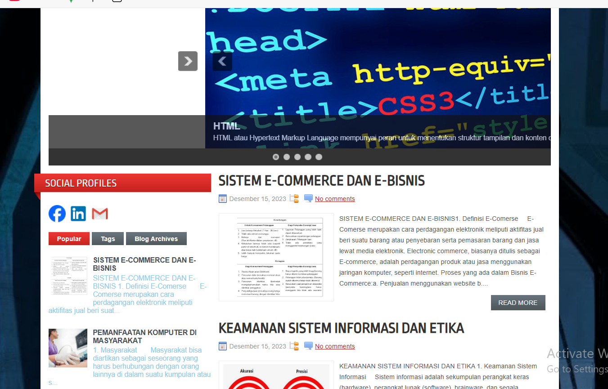

WEB DEVELOPER - DESIGNER
Saya adalah seorang mahasiswa Program Studi Teknik Informatika di Universitas Pamulang. Sebelumnya, saya menempuh pendidikan di SMK Muhammadiyah 3 Jakarta Barat. Saya memiliki ketertarikan dalam bidang teknologi, khususnya pengembangan perangkat lunak dan web development, serta terus berusaha mengembangkan keterampilan teknis dan soft skill untuk menunjang karier di dunia teknologi informasi.
Blog ini berisi berbagai tulisan dan ulasan seputar hubungan antara teknologi komputer dengan kehidupan masyarakat modern. Dibuat sebagai sarana berbagi pengetahuan, blog ini membahas topik-topik seperti peran komputer dalam dunia pendidikan, dampak teknologi terhadap sosial budaya, etika penggunaan teknologi, hingga perkembangan TIK di masyarakat. Ditujukan untuk pelajar, mahasiswa, dan masyarakat umum yang ingin memahami bagaimana teknologi membentuk perilaku dan aktivitas sehari-hari, blog ini juga mendukung pembelajaran di bidang Teknologi Informasi dan Komunikasi.
Blogspot : Hendra Ferdi Ferdianata
Email: hendraferdi135@gmail.com
LinkedIn: Hendra Ferdianata
GitHub: Hendra Ferdianata